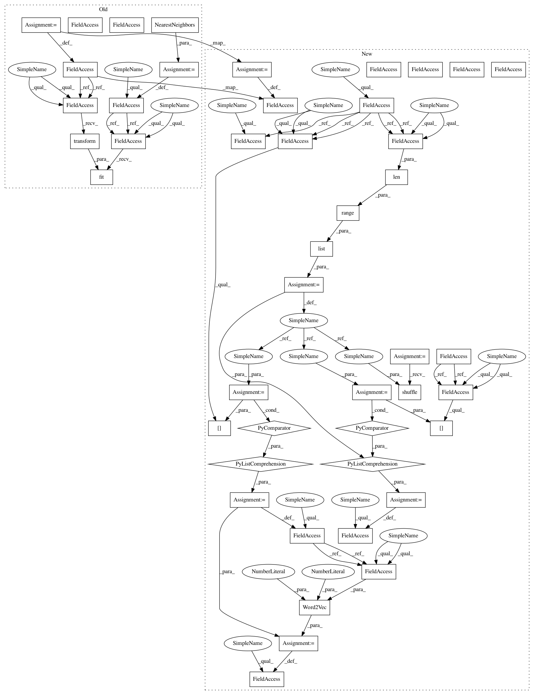

88b754261ee28f8e4143a573135a0f33da42d249,bugbug/similarity.py,NeighborsSimilarity,__init__,#NeighborsSimilarity#Any#Any#Any#,205
Before Change
class NeighborsSimilarity(BaseSimilarity):
def __init__(self, k=10, vectorizer=TfidfVectorizer(), cleanup_urls=True):
super().__init__(cleanup_urls=cleanup_urls)
self.vectorizer = vectorizer
self.similarity_calculator = NearestNeighbors(n_neighbors=k)
text = []
self.bug_ids = []
for bug in bugzilla.get_bugs():
text.append(self.text_preprocess(self.get_text(bug), join=True))
self.bug_ids.append(bug["id"])
self.vectorizer.fit(text)
self.similarity_calculator.fit(self.vectorizer.transform(text))
def get_similar_bugs(self, query):
processed_query = self.vectorizer.transform([self.get_text(query)])
After Change
class Word2VecWmdSimilarity(BaseSimilarity):
def __init__(self, cut_off=0.2, cleanup_urls=True, nltk_tokenizer=False):
super().__init__(cleanup_urls=cleanup_urls, nltk_tokenizer=nltk_tokenizer)
self.corpus = []
self.bug_ids = []
self.cut_off = cut_off
for bug in bugzilla.get_bugs():
self.corpus.append(self.text_preprocess(self.get_text(bug)))
self.bug_ids.append(bug["id"])
indexes = list(range(len(self.corpus)))
random.shuffle(indexes)
self.corpus = [self.corpus[idx] for idx in indexes]
self.bug_ids = [self.bug_ids[idx] for idx in indexes]
self.w2vmodel = Word2Vec(self.corpus, size=100, min_count=5)
self.w2vmodel.init_sims(replace=True)
// word2vec.wmdistance calculates only the euclidean distance. To get the cosine distance,
// we"re using the function with a few subtle changes. We compute the cosine distances
In pattern: SUPERPATTERN
Frequency: 3
Non-data size: 45
Instances
Project Name: mozilla/bugbug
Commit Name: 88b754261ee28f8e4143a573135a0f33da42d249
Time: 2019-07-29
Author: ayush.shridhar1506@gmail.com
File Name: bugbug/similarity.py
Class Name: NeighborsSimilarity
Method Name: __init__
Project Name: mozilla/bugbug
Commit Name: 4ace4ef2fb1956ec4df46f78c9edd02154780913
Time: 2019-07-24
Author: cklyyung@users.noreply.github.com
File Name: bugbug/similarity.py
Class Name: NeighborsSimilarity
Method Name: __init__
Project Name: mozilla/bugbug
Commit Name: 8b6e7d266ffb855e883cdf5fccfd3c365fea0e3a
Time: 2020-05-20
Author: ayush.shridhar1506@gmail.com
File Name: bugbug/similarity.py
Class Name: NeighborsSimilarity
Method Name: __init__
Project Name: mozilla/bugbug
Commit Name: 88b754261ee28f8e4143a573135a0f33da42d249
Time: 2019-07-29
Author: ayush.shridhar1506@gmail.com
File Name: bugbug/similarity.py
Class Name: NeighborsSimilarity
Method Name: __init__